As a Foundry user, you may need to collaborate with other organizations, including business partners, vendors, or customers, while maintaining strict security boundaries.
You likely fall into one of the two common scenarios below:
Foundry enables secure collaboration in both of these situations, allowing you to onboard external entities while enforcing robust access controls. This guide outlines best practices for configuring organizations, authentication flows, and security boundaries in Foundry.
Familiarize yourself with the following concepts to understand the collaboration approaches that will be covered later on. Additional information is available for each concept in the linked documentation.
In Foundry, an organization is a core security concept, enforcing access controls and data segregation between different groups of users and sets of resources. Refer to the organization documentation for more information.
Multiple organizations are ideal for enforcing data security and segregation while enabling secure collaboration. With organizations, you can build an ecosystem of partners, vendors, or companies.
Key features:
Note that the option to create a space or ontology is displayed when creating an organization, but these are distinct concepts that are not required to create an organization.
A space, previously known as a namespace, is a high-level container of projects. Spaces enable collaboration between users centered around a common purpose, and can be shared across multiple organizations.
A space always has an associated ontology of the same name. For example, a space called âCompany Aâ will have an associated ontology that is also called âCompany Aâ. This ontology is âcontainedâ in its associated space.
One or multiple organizations can have access to one or multiple spaces. For the purposes of this guide, we will refer to a space that is restricted to one organization as a âprivate spaceâ, and a space that is accessible to a set of organizations as a âshared spaceâ. There is no technical difference between these, except the number of organizations that each space is shared with.
An organization with access to a space gives project owners the option to share projects with members of that organization. An organization having access to a space does not mean that all members have access to all projects by default. Refer to the spaces documentation for more information.
Resources can be moved from one space to another if a user has sufficient permissions on the source and target spaces, and sufficient permissions on the organization(s) that are tagged on the source and target projects. Essentially, the created resources will be expanded to other organizations. This requires elevated permissions on the source organizations.
Note that some legacy Foundry environments may use different filesystems for each space, preventing resources from being moved, but this is not typically the case.
Key features:
Below is a sample organization that can access a space, which contains projects and resources.
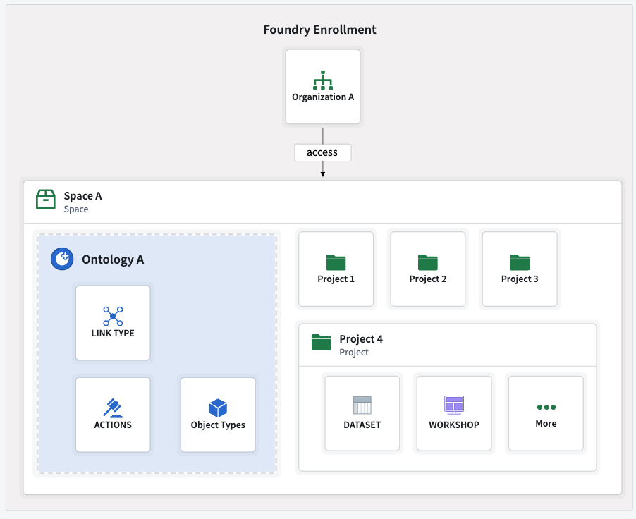
A space that is shared with several organizations can include projects that are only available to a subset of those organizations. Review the multi-organization spaces documentation for more information.
The following is an example of multiple organizations that can or cannot access a space. Within this space, a subset of those organizations can have access to a given project.
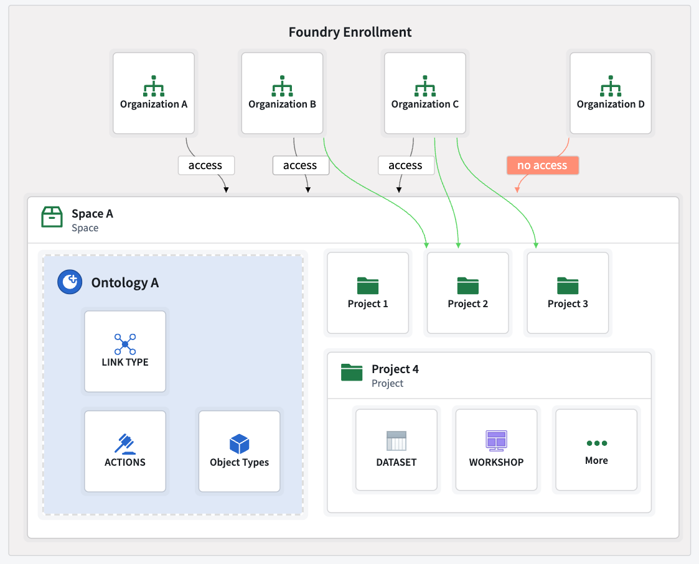
An ontology groups resources such as object types, actions, links, groups, and interfaces. These serve as a shared source of truth for decision making and decision capture for all users across an organization. Refer to the ontology documentation for more information.
Ontologies cannot exist independently of a space. When a space is created, an ontology will be created as well. A space's permissions and organizations will be propagated to that spaceâs ontology. To learn more, refer to the ontology and spaces documentation.
Resources can be moved from one ontology to another ontology. Visit the ontology migration documentation for more details.
Key takeaways:
Note that functions are not considered ontology resources.
Projects enforce stricter security boundaries than standard folders, and organize resources related to a specific purpose. For example, all data transformations and their outputs are contained within a project. A transformation cannot write to another project, although projects can consume resources from another project with the necessary permissions.
Project access should be managed at the project level for users and groups, minimizing the need for individual role assignments. Refer to the projects and roles documentation for more information.
Key takeaways:
Resources in one project can be imported into and consumed by another project, for example as inputs for pipelines or analyses. Once a resource is imported, any user with the appropriate role, such as Viewer, can access it.
Resources can be imported across spaces, as long as a user has the necessary permissions to execute the import. For example, a dataset from space A can be imported into space B and used as a backing datasource in a space B ontology.
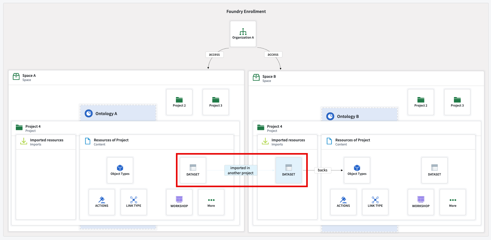
Depending on your organizational requirements, you may need to structure your organizations, spaces and permissions according to different configurations.
Consider the questions below when building for B2B or B2C scenarios.
Note that for the purposes of this guide, a customer can denote an individual or an entity such as a company, supplier, or buyer.
The answers to these questions will help you understand your organizational needs and the Foundry configurations that may be best suited to your use case. Review the sections below to learn more about common scenarios and how to structure spaces, organizations and permissions according to each. If you require additional information or have unique organizational needs, contact your Palantir representative.
The most straightforward and common configuration only requires a single organization and a single space. All projects are created and managed in the same space, and project-level permissions can be refined using markings and roles that are assigned to users or groups.
Refer to the example below, where an organization has access to a single space that contains one ontology.
While streamlined and easy to maintain, this configuration may not be sufficient for secure collaboration with external entities. In that case, a configuration that uses multiple spaces and organizations is necessary to maintain strict security boundaries.
The B2B configuration enables secure collaboration with external entities by using multiple spaces and organizations to maintain strict security boundaries while meeting your organizational needs. This configuration consists of a main internal organization, and additional separate organizations for your customers.
B2B organizations may have hundreds of customers, each with hundreds or even thousands of users. In such scenarios, it is possible to onboard customers at scale. If you have hundreds of customers, you can have hundreds of organizations on your Foundry instance. Note that there are limits to the number of customers and users, but these limits are typically sufficient to allow onboarding large customer bases with numerous users.
Below are different options for how customers can collaborate with you and with each other using combinations of shared and private spaces.
If no collaboration is required, each customer can have its own organization. Each organization can have its own space and ontology, with no resource sharing or collaboration configurations. Users from one organization can be added as guests to other organizations to work on resources there.
However, even if users belong to multiple organizations as guests, they cannot import resources between organizations. This is because organization markings on resources prevent imports into non-shared spaces.
In the example below, multiple organizations each have their own space and ontology.
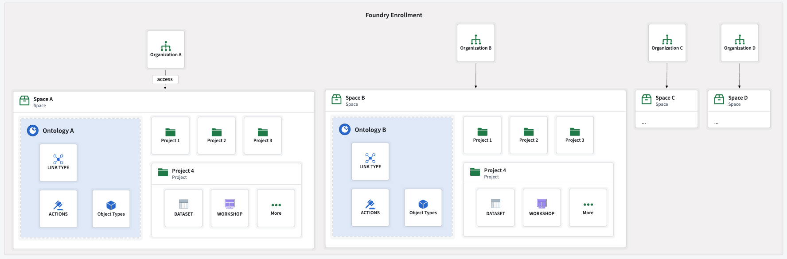
By default, a user of one organization cannot see the existence of other organizations. This behavior can be configured in Control Panel. Refer to the cross-organization collaboration documentation for more information.
Below are the configuration options for cross-organization visibility and collaboration in Control Panel.
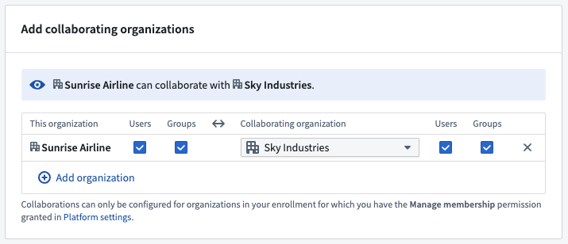
A shared space and its ontology can be created to enable collaboration between organizations. A space can be made accessible to multiple organizations, allowing them to work together and access shared resources.
Access to a shared space does not automatically grant access to all of the space's projects. Each project can be restricted to specific organizations. Organizations can only access the projects in the spaces they have access to. For example, each application can be stored in one project, where only allowed organizations are granted access.
Below is an example of multiple organizations with access to a shared space and ontology.
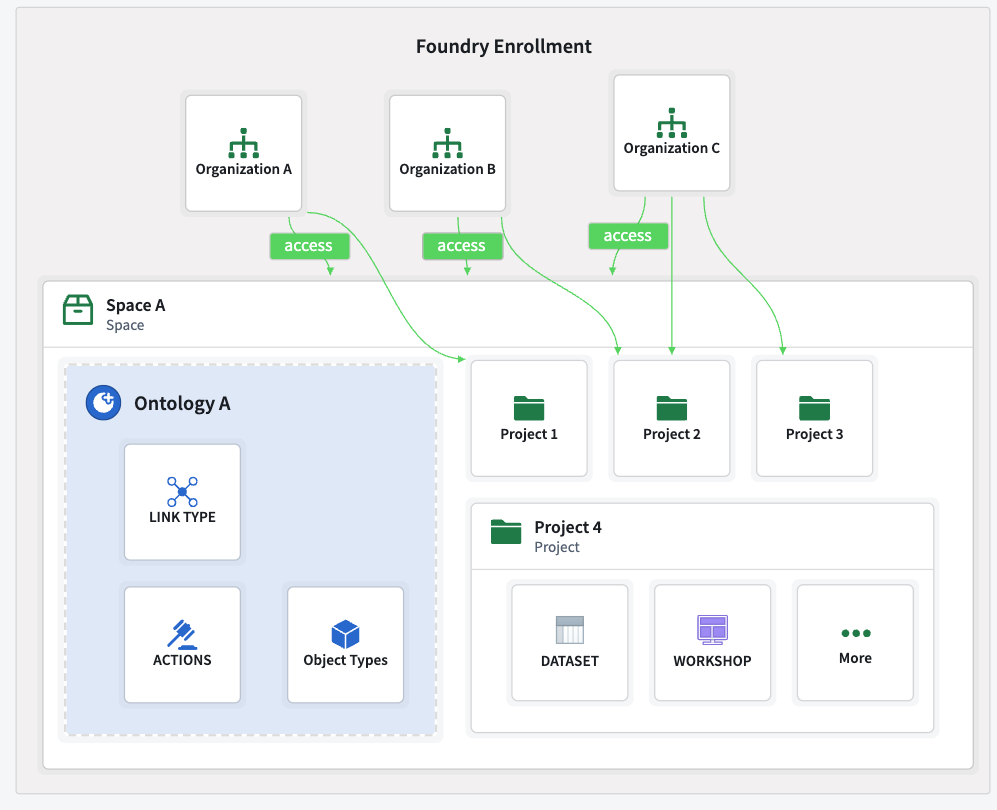
By combining a shared space with restricted views, you can enable multi-organization applications with row-level security, ensuring that each organization only accesses authorized data.
:::callout{theme="warning"}
This configuration's security is ensured by correctly configuring restricted views, project permissions, and cross-organization visibility. Administrators should take special care when defining permissions.
An example of valid setup is importing a dataset from a private space, creating a restricted view in a shared space, and creating ontology entities on top of this restricted view in the shared ontology.
:::
The example below demonstrates multiple organizations with access to a shared project (project 2) in a shared space. These organizations can only access the data as defined by the restricted view policies.
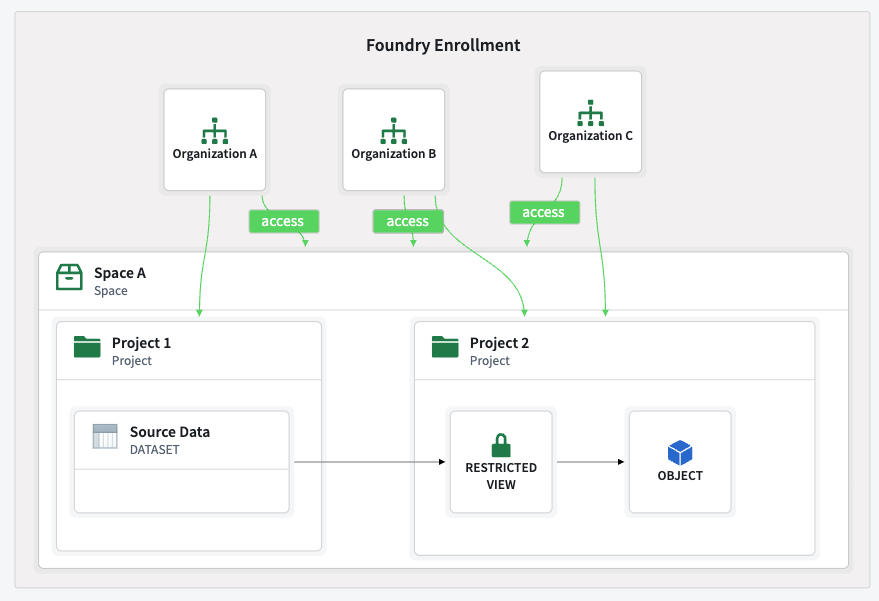
As previously stated, a shared space and its ontology can be created to collaborate between organizations. However, each organization can also have its own space and ontology.
This approach is useful when shared resources and applications need to be accessible by all organization and organization-specific workflows or customizations are required.
Below are some examples of scenarios that benefit from private and shared spaces.
In the example below, organizations have their own space and ontology as well as access to a shared space and ontology.
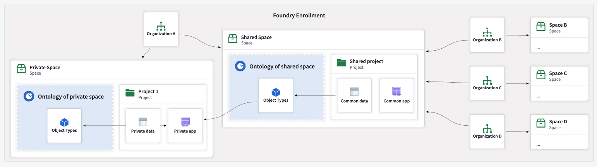
Resources from multiple organizations can be brought into a shared space, allowing for cross-organization references and collaboration with data from different sources. However, when managing permissions, it is important to consider how resource markings. Markings control who can access a resource or its content, in addition to the standard project-access layer.
Below are the different types of markings:
Both of these types of markings can be applied in different ways, with combinations of AND and OR to define access, but their default behavior differs. However, depending on the marking type and where in the platform it is applied, the way it is applied differs. Organization and non-organization markings may be applied with the OR condition, AND condition, or a more complex combination, depending on where and how the marking is applied.
Markings control who can access a resource or its content. Refer to the guidelines below for how disjunctive and conjunctive markings work.
OR): Can be accessed by users who satisfy any of the required markings.AND): Can only be accessed by users who satisfy all of the required markings.PII non-organization marking has been applied to a resource, only users that have access to the PII marking will be able to access this resource.OR organization B], and dataset 2 is marked with [organization A OR organization C], the downstream dataset will require a user to be a part of [organization A OR organization B] AND [organization A OR organization C] to access it.stop_propagating or stop_requiring methods.Refer to the removing inherited organizations documentation for more information.
Below are some practical implications:
OR B, so any user of organizations A or B can access it.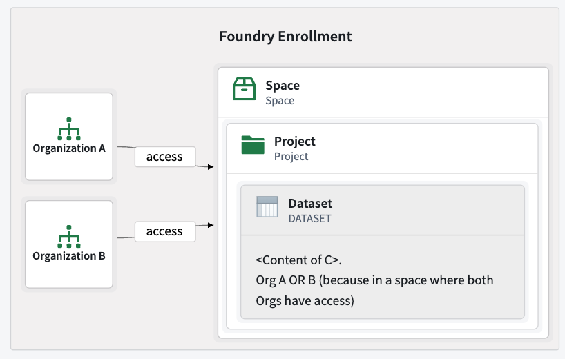
AND organization B because of its provenance. If this dataset is unmarked, it will require organization A OR organization B because of its location.Refer to the shared space and ontology documentation for more information.
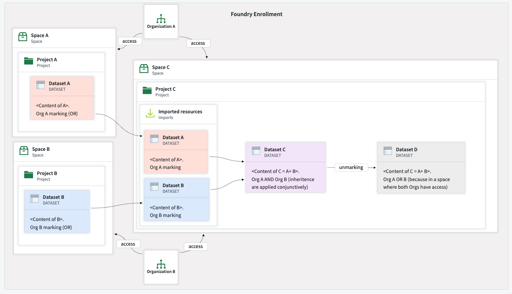
if user_rid === content of this column, allow access to this row.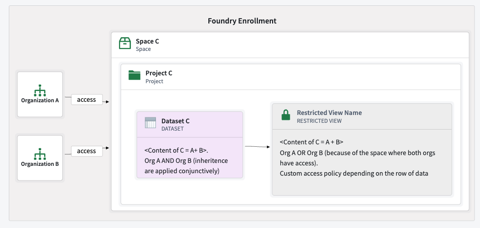
You can remove a marking for all of the restricted view content before applying row-level access policies.
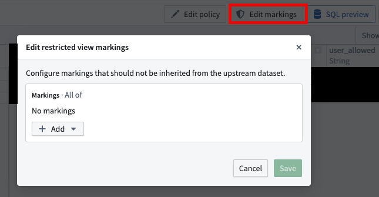
In B2C scenarios with a very large number of organizations, for example thousands, a different approach may be required. For this guide, we will use the following configuration:
Below is an example of a main internal organization and a separate organization for all users, with user discoverability disabled. Both organizations have access to a shared customer space and ontology.
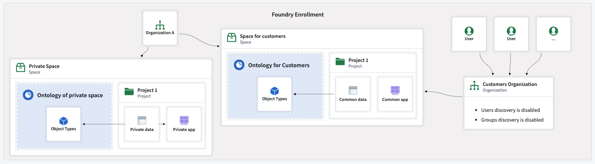
You can allow or disallow users and groups from seeing each other within an organization in Control Panel.
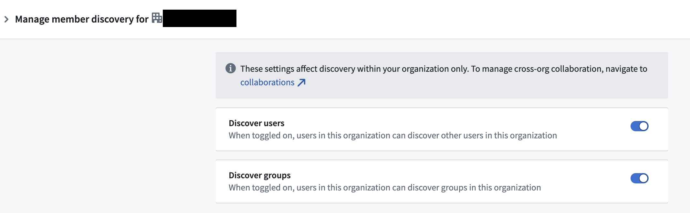
A common requirement in B2C scenarios is to limit customer data access so that they can only view their own data or a specific subset of data. This can be implemented using restricted views.
Configuring a restricted view for a B2C use case closely mirrors the process for a B2B use case, but instead of isolating business data, it ensures customers cannot access each otherâs data.
The example below demonstrates multiple customers using the same application, where each customer can only see their own objects instances. The restricted view policy defines which rows a user can access and hence which objects they can see.
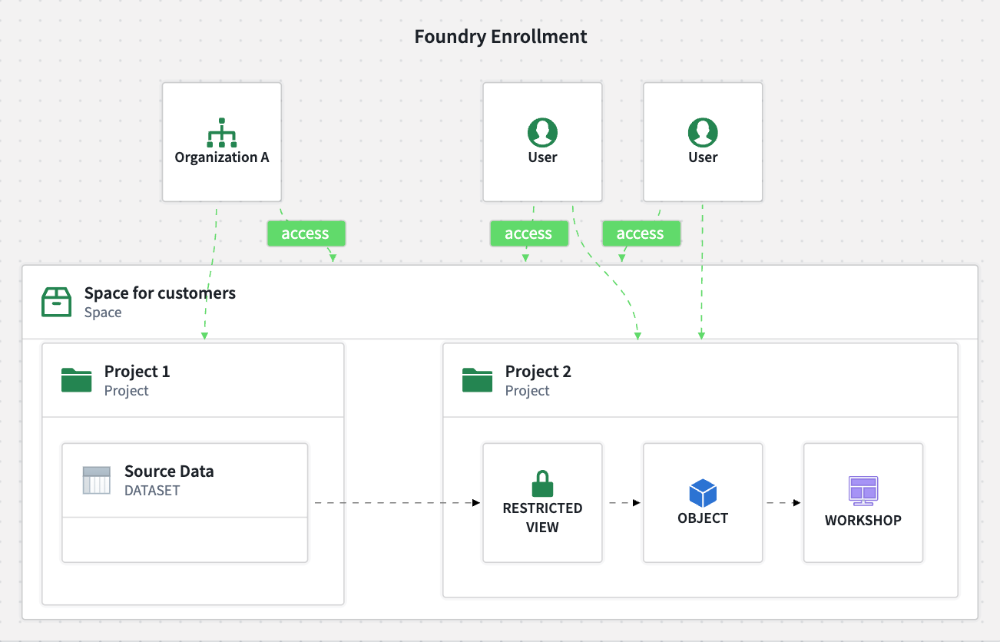
Restricted view policies can be implemented in various ways. A common need is to allow users to only view only the objects they have created. This is implemented by configuring an action that creates a new object in an object type backed by a restricted view. The policy allows access to objects instances only if the userâs ID matches the user ID column in the object's property. When new objects are created, the user ID column is automatically populated with the current userâs ID, ensuring users can only access their own objects.
In addition to creating organizations and spaces, users need a way to authenticate with an identity provider to access their accounts. For the purposes of this guide, terms like "business entity", "customer", and "third party" all refer to the same concept; an external organization that is being onboarded.
Each customer is onboarded as a unique organization and each customerâs identity provider (IDP) is integrated with Foundry. This method is best suited for scenarios with a low number of customers, or where each customer has a large user base and wants to manage their own groups and access control. Refer to the group external realms documentation for more details.
This approach requires multiple manual interventions. There is no automated process for collecting and configuring customers' identity provider. You will need to obtain the details of each customer's identity provider and follow the setup described in the SAML getting started and identity provider configuration documentation.
For each onboarded customer, the goal is to synchronize IDPs through identity or SSO federation. This is a common approach in SaaS B2B setups, where IDPs trust each other to enable seamless authentication. This method is especially useful when onboarding a high number of customer entities. In this case onboarding is more streamlined, since you control the IDP infrastructure. Most of the process can be scripted or fully automated using tools such as Okta or Auth0.
Each user must have an attribute indicating their associated organization. This attribute is passed to Foundry by the IDP to route users to the correct organization upon login. This allows support for restricted view workflows, ensuring that users only see permitted data by basing policies on users attributes.
:::callout{theme="warning"} You should always configure a default rule where users without an organization attribute should be assigned to a "No organization" group. This prevents accidental access to unintended data if the organization attribute is missing. :::
You can assign users to an organization depending on their user attributes in Control Panel. See user rules for more information.
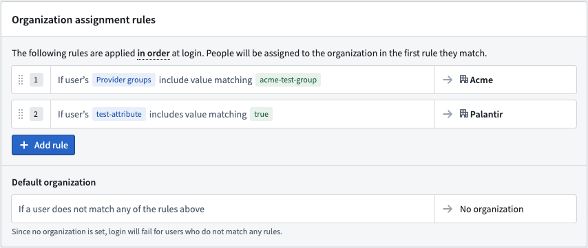
In this approach, you provide and manage an IDP, and create user accounts directly in this IDP. This strategy is especially relevant for B2C scenarios.
Key advantages:
You can combine multiple strategies to suit different customer needs.
This flexible approach allows you to tailor onboarding and authentication workflows based on the size and requirements of each customer.
A builder on Foundry can create resources such as datasets, pipelines, objects, and applications. These resources can then be packaged and deployed to other users. For example, resources can be deployed to other projects or spaces, or to the same or different organizations. This enables you to centrally develop applications and workflows, then distribute them to other businesses or organizations. This allows for release management from one development environment to an environment shared between organizations.
For more information, refer to the following resources:
Resources packaged as a Marketplace product can be installed in a new project and space. Resources can be installed multiple times, potentially in different projects or organizations to allow organizations access to their own package installations. This is ideal for "build centrally, deploy to many" scenarios, with the flexibility to tweak workflows as needed after installation.
Considerations regarding the development environment:
Expand permission on this organization, as they are expanding resource access to other organizations.Considerations regarding Marketplace store placement:
With this product distribution setup, keep the following considerations in mind:
Consider the diagram below, where organizations are structured as follows:
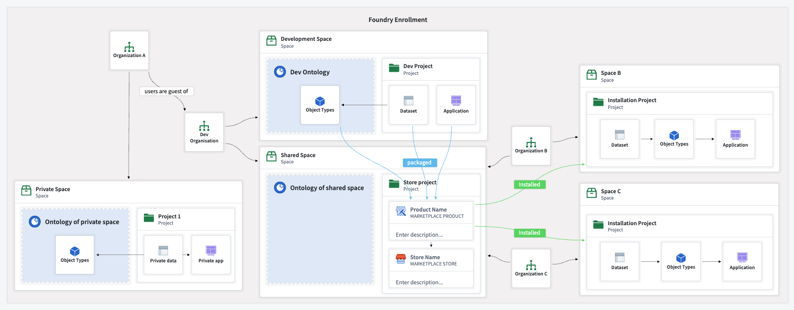
Refer to the store permissions guidance for more information.
Refer to the following sections for access strategies for product distribution.
If you want users to install Marketplace products themselves, you must grant the relevant permissions to install from the store to a specific location.
marketplace:install-from-local-marketplace permission on the project containing the store. This permission is usually granted to the Viewer role, assuming the role was not manually altered by the customer.marketplace:install-in permission on the target space and ontology to install the marketplace product in a particular place. This permission is usually granted to Editor or Owner roles, assuming they were not manually altered by the customer.Viewer permissions on inputs, or linked products.Refer to store permissions for more information.
This enables self-service installation following the previously described setup.
If you prefer to control the installation process, such as for monetization, you should only grant platform administrators or designated internal developers access to the Marketplace store's project. This enables them to handle product installation for end-users and maintain control over the process.
Having your developers manage installations on behalf of your customers typically requires one of two approaches: